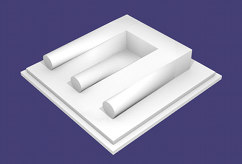
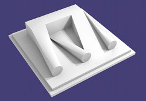
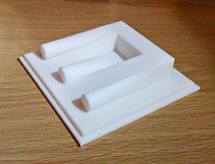
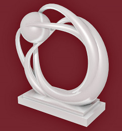
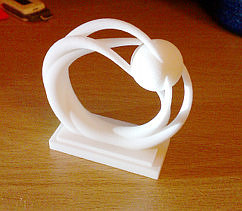

3D Printing
Software
I wrote various software to design and print objects.- openscad-py is a Python OOP precompiler for OpenSCAD's language.
- gcode power splitter splits gcode into blocks of layers for 3D printing in multiple stages.
Blivet, or the Devil's Tuning Fork, or Poiuyt
This object is designed to look like the famous impossible object from a certain angle (see the Wikipedia article), and is available from Shapeways.

The object from the angle it resembles the blivet.

And from another angle revealing how it's done

And finally, the printed object!
3-Statue
A statue or ornament based on a parameterized surface.

The model

The printed object, from above
 LinkedIn »
LinkedIn »